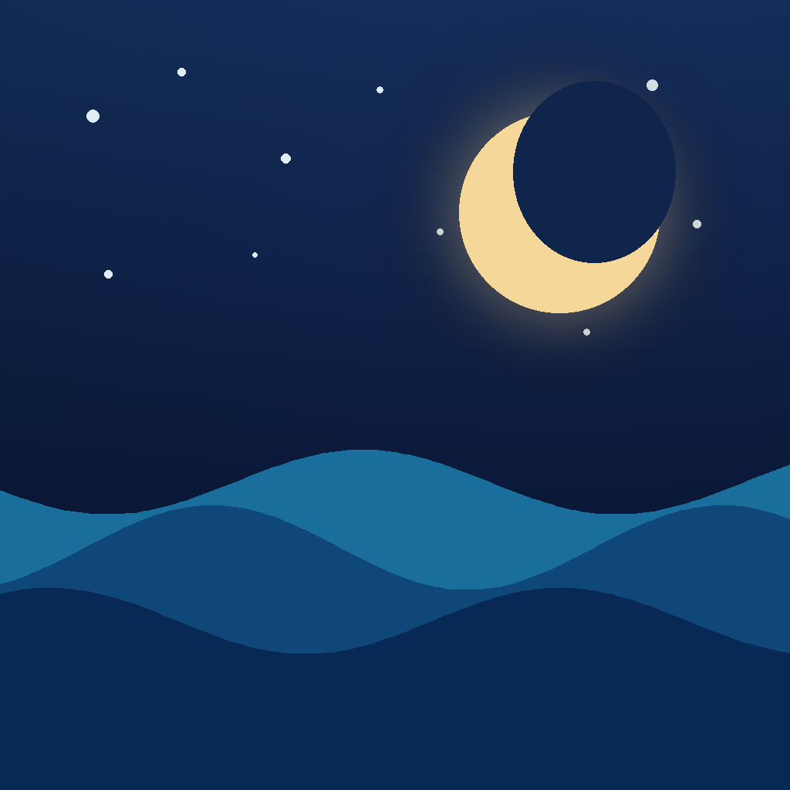

Sleepscapes
Bedtime stories that become all-night soundscapes.
Sleepscapes gives families a calm, predictable bedtime routine without ads, accounts, tracking, or another subscription. Each narrated story gently hands off to its matching all-night ambience, so the room stays settled after the final words.
- Five distinct bedtime worlds, each pairing a story with matching all-night sound
- One-tap Tonight routine that remembers the family's preferred story, timer, dimming, and control-lock settings
- Rain, jungle, ocean, quiet train, and winter ambience designed for low-arousal overnight listening
- Background playback and lock-screen controls
- Optional local bedtime reminder — no account, server, or tracking
- Downloaded audio works offline, including on trips and during internet outages
One free world. One optional unlock.
Rain River and its matching Just Rain soundscape are included. The optional Original Collection unlock adds four more stories and four matching all-night sounds through one App Store purchase. There is no subscription and no recurring charge.
Made for bedtime, not screen time
The interface stays quiet and predictable, with large accessible controls, a dim-to-black mode, and no streaks, badges, feeds, ads, or child-facing purchase prompts. Purchases, previews, reminders, restore controls, and bedtime defaults stay behind a grown-ups gate.
Coming to iPhone. Sleepscapes is currently in final App Store preparation.
iPhone app
Support & privacy
Support · Sleepscapes privacy policy — short version: Sleepscapes has no accounts, ads, analytics, or tracking. Stories, preferences, and optional reminders stay on the device.